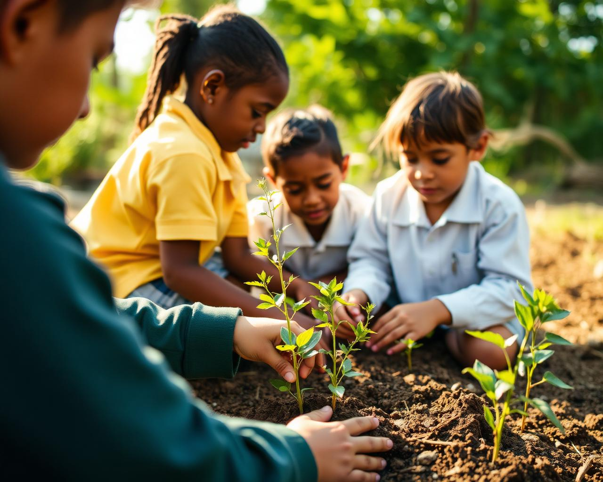

O Gira-Brasil é uma plataforma digital de jornalismo e educação ambiental sobre as florestas, os biomas e a biodiversidade do Brasil.
É um espaço onde informação ambiental, educação e tecnologia se encontram. Reunimos reportagens sobre meio ambiente, conteúdos didáticos sobre os seis biomas brasileiros, jogos educativos e um assistente de inteligência artificial focado em temas ambientais do país.
Informação ambiental de qualidade existe, mas raramente chega a estudantes em uma linguagem acessível e envolvente. O Gira-Brasil enfrenta esse problema aproximando o jornalismo ambiental da sala de aula, com conteúdo confiável e experiências interativas.
A tecnologia entra como ferramenta pedagógica: mapas navegáveis, jogos que ensinam cadeias alimentares e biomas, e um assistente de IA que responde dúvidas sobre fauna, flora e preservação. O projeto foi desenvolvido por estudantes de um curso técnico de informática, unindo desenvolvimento web, design e pesquisa ambiental.

A primeira versão era um site informativo. A nova versão é uma plataforma ambiental interativa, com jornalismo, jogos e inteligência artificial.
Mantemos o site no ar, as notícias atualizadas e o Gira-Bot funcionando com o apoio de quem acredita no que estamos construindo. Se o Gira-Brasil já te ajudou a entender melhor a natureza brasileira, você também pode ajudar a mantê-lo — e a levá-lo mais longe.
Apoiar o Gira-Brasil → =======Mantemos o site no ar, as notícias atualizadas e o GiraBot funcionando com o apoio de quem acredita no que estamos construindo. Se o Gira Brasil já te ajudou a entender melhor a natureza brasileira, você também pode ajudar a mantê-lo — e a levá-lo mais longe.
Apoiar o Gira Brasil → >>>>>>> 3f8e1edbbd309699acdcd5295a70a731d199e8ceNavegue pelas regiões, leia as reportagens, jogue e converse com o Gira-Bot.